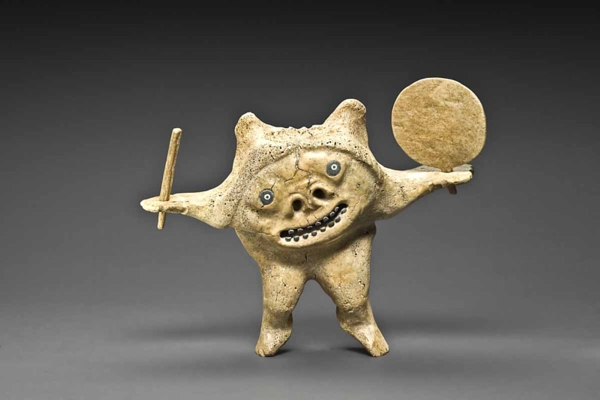

Tuesday, November the 10th, 2015
back to: title, date or indexes
This little Inuit shaman figure is designed to represent good and evil, or yin and yang, or heaven and hell, in snack-world. In one hand he holds a Twiglet, in the other a Rich Tea biscuit.
